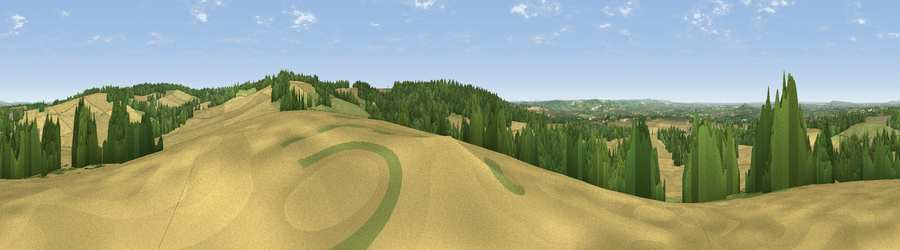

Viewpoint near Nuffield
#23119 in England · top 19% of its area beats it · near NuffieldWhere it is
The exact computed spot (SU 65475 87975). Click the marker for map links.
The view, rendered

A 360° render of this exact spot computed from the terrain model, tree cover and land cover — summer colours, afternoon light, calibrated against photographs of famous viewpoints. Real trees, hedges and buildings will differ in detail.
The panorama
Grey silhouette: terrain skyline in each direction (720 bearings, Earth curvature and refraction included). Dashed green: skyline with trees (+15 m) and buildings (+8 m) as obstacles. Blue strip: how far the ground is visible on each bearing.
Where the view opens
Wedge length = distance to the farthest visible ground on that bearing (vegetation-aware). Rings at 10, 25 and 50 km.
What fills the view
60% cropland · 22% woodland · 17% grassland · 1% built-up
Angular shares of the visible panorama (visual magnitude), not map area. Landscape diversity 0.43 (0–1 Shannon).
Key numbers
More beautiful places nearby
The staircase of upgrades: each row has a higher view potential than everything closer. Driving times are estimates from straight-line distance, calibrated against real road routing — check an actual route before setting out.
| Place | Direction | Drive | Score |
|---|---|---|---|
| Viewpoint near Nuffield | NE · 1 km | ~4 min | 62.3 |
| Viewpoint near Cookley Green | NNE · 4 km | ~9 min | 64.3 |
| Viewpoint near Cookley Green | NE · 5 km | ~11 min | 68.5 |
| Viewpoint near Watlington | NE · 7 km | ~15 min | 70.6 |
| Viewpoint near Lewknor | NE · 10 km | ~19 min | 70.8 |
| Viewpoint near Lewknor | NE · 12 km | ~22 min | 74.4 |
| Coombe Hill Monument | NE · 27 km | ~43 min | 75.5 |
| Viewpoint near Woolstone | W · 36 km | ~54 min | 76.7 |
51.58684, -1.05635 · source: screening · position refined by local search. Computed location — check access rights before visiting.